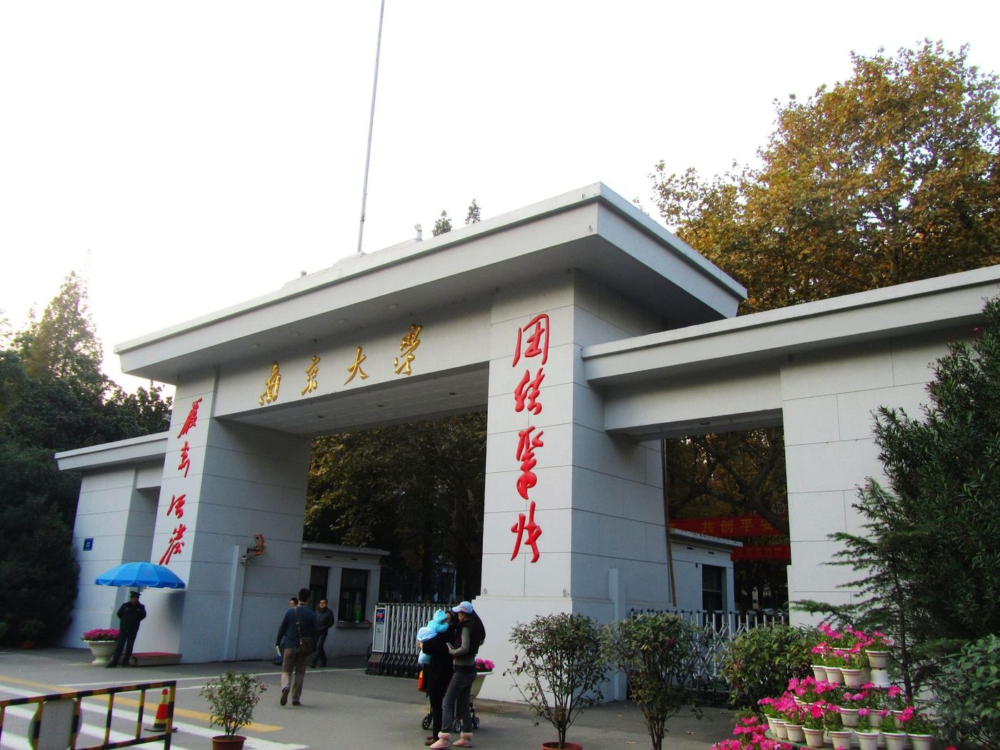
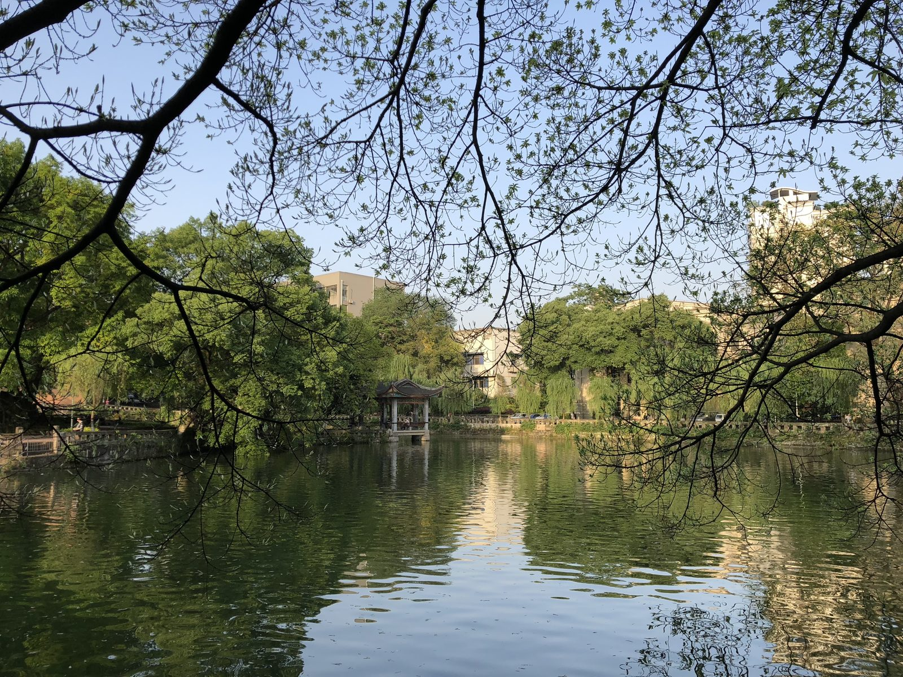
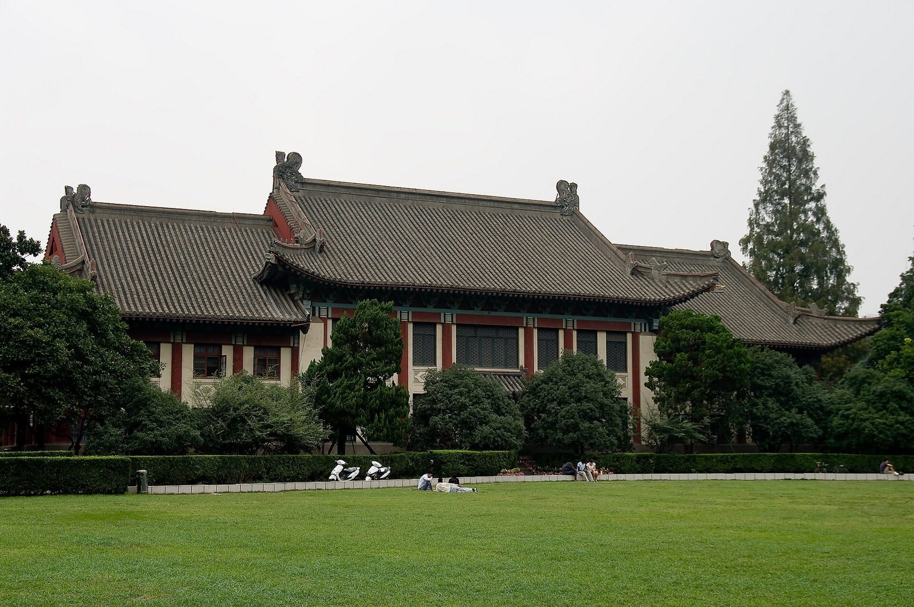
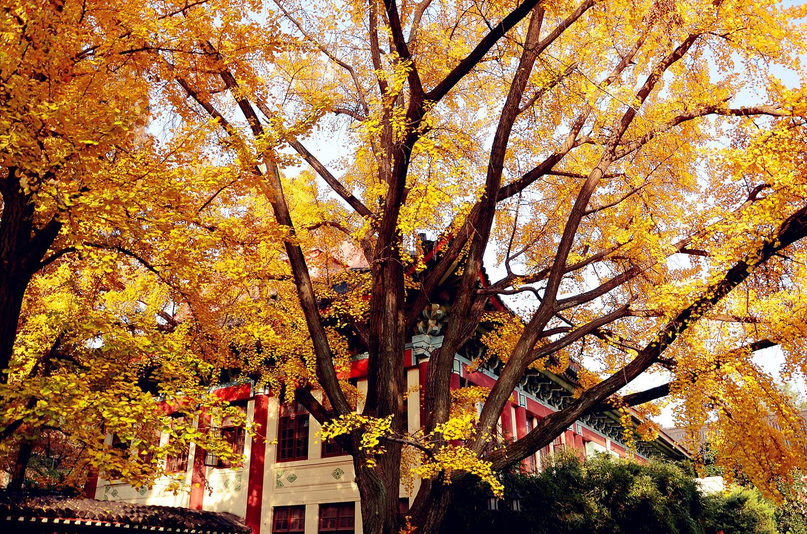
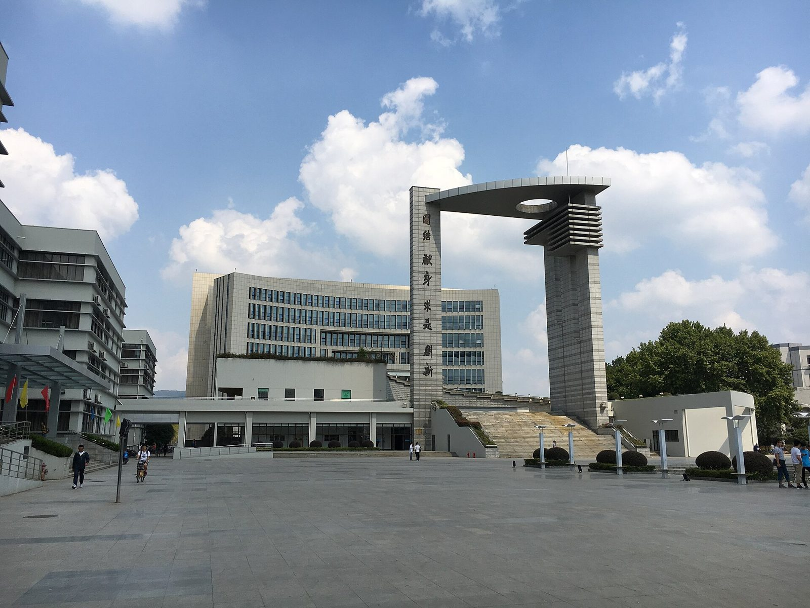

Заезд в Китай в феврале 2027, учёба с 22 февраля до начала июля, всё за свой счёт. Разобрал четыре вуза, которые ты назвал: где весенний набор действительно есть, до какого числа подавать, сколько стоит семестр и что собрать уже сейчас.
Только языковая программа на один семестр. Стипендии, бакалавриат и специальности здесь не разбираются.
Про даты. Весенний семестр 2027 — вторая половина 2026–2027 учебного года. Поэтому здесь брошюры и цены 2026 года — не образец, как в досье, а действующие правила. Основной план (октябрь 2027) остаётся в досье и не меняется.
Сегодня–завтра: отправить четыре письма — они готовы внизу страницы, с темой крупно «2027年春季学期», чтобы опять не ответили про прошлый набор.
10–12 октября: подать в Нанкинский. Пакет из трёх документов, первичный ответ за 5 рабочих дней, а места уходят в порядке очереди.
Параллельно собирать пакет для Чунцина — это запасной вариант до 30 ноября. Если главное для тебя деньги, поменяй порядок: Чунцин дешевле Нанкина примерно на 82 000 ₽ за семестр.
Сводная таблица
Вуз
Весна 2027
Подача
Учёба / семестр
Двухместная / семестр
Что требуют сверх обычного
Семестр итого
НанкинскийNJU南京大学
есть, официально
10.10–25.12.2026 пока есть места
10 500 ¥
52 ¥/сутки ≈ 7 020 ¥ не гарантировано
ничего: паспорт, диплом, личное заявление
≈ 18 420 ¥ ≈ 231 000 ₽
ЧунцинскийCQU重庆大学
есть, официально
до 30.11.2026
8 000 ¥
2 500 ¥, корпус 松林坡 кто первый
справка о 30 000 ¥, медкомиссия, несудимость, 2 рекомендации
≈ 11 900 ¥ ≈ 149 000 ₽
Нанкинский педNNU南京师范大学
не опубликована
официально только осень: 01.04–01.06.2026
8 300 ¥
3 500–6 000 ¥ только диапазон
для языковых не расписано
≈ 12 200–15 100 ¥ ≈ 153–189 тыс. ₽
Нанкинский политехNJUST南京理工大学
нет
01.01–15.06.2026, заезд в сентябре
8 000 ¥
4 500 ¥ не для бывавших в Китае
медкомиссия, несудимость, онлайн-собеседование
—
«Семестр итого» = учёба + двухместная комната + взносы и страховка, без еды, учебников, перелёта и визы. Нанкин считаю за 135 суток — с 20 февраля по 5 июля 2027. Рубли — по курсу ЦБ на 26.09.2026 (1 ¥ = 12,54 ₽); в банке юани обычно дороже.
Календарь до заезда
Даты занятий — по календарям Нанкинского и Чунцинского на 2026–2027 год. Счётчик дней обновляется сам.
Сейчасэта неделя
Письма, паспорт, перевод диплома
Отправить четыре письма. Проверить срок загранпаспорта: Чунцин просит, чтобы он действовал больше года. Заказать нотариальный перевод диплома на английский — он нужен обоим вузам. Если в игре Чунцин — сразу заказать справку о несудимости на Госуслугах (делают до 30 дней) и найти двух рекомендателей. В октябре–ноябре пройти медкомиссию по форме вуза: одна подойдёт обоим.
10 октября
Открывается подача в Нанкинский
На istudy.nju.edu.cn. Подавать в первые дни — приём идёт, «пока есть места». Первичный ответ — до 5 рабочих дней, потом взнос 500 ¥ и решение; приглашение и форма JW202 для визы — в течение месяца.
30 ноября
Последний день подачи в Чунцинский
На cqu.17gz.org, взнос 600 ¥ сразу — без оплаты заявку не смотрят. Медкомиссия действует 6 месяцев: сделанная в октябре–ноябре доживёт до заезда.
25 декабря
Нанкинский закрывает подачу
Если места к этому дню ещё останутся. Рассчитывать на последний день не стоит.
11 января
У китайских вузов каникулы
У Нанкинского — с 11 января по 21 февраля, а 6 февраля китайский Новый год. Все вопросы по приглашению закрыть до этой даты.
Середина января
Бронь общежития в Нанкинском
Открывается на istudy.nju.edu.cn. Успел внести бронь — место есть; не успел — жильё ищешь сам.
Конец января
Виза X2
Учебная виза на срок до 180 дней, оформляется по приглашению вуза. По данным визовых агентств — 4–7 рабочих дней, однократная от ~6 300 ₽.
20 февраля
Регистрация
В Чунцине — 20 февраля по календарю вуза. В Нанкине точная дата будет в приглашении.
22 февраля
Первый день занятий
И в Нанкинском, и в Чунцинском — по их календарям на 2026–2027 год.
4 июля
Конец семестра
Нанкин — 4 июля, Чунцин — начало июля. Около 135 дней в Китае — в визу X2 (до 180 дней) укладывается.
01
Нанкинский университет
NJU
南京大学 · Nanjing University Нанкин, кампус Гулоу
Весенний набор есть — официально правило вуза: «每年10月10日至12月25日前，额满为止»

Ворота кампуса Гулоу — здесь идут занятия языковой программы. Фото: Wikimedia Commons.
Подача на весну
10.10–25.12
2026 год · закрывают, когда кончатся места
Занятия
22.02–04.07
2027 год · 19 недель по календарю вуза
Учёба
10 500 ¥
за один семестр
Общежитие
52 ¥/сутки
двухместная в Гулоу · ≈ 7 020 ¥ за 135 суток
Часов в неделю
20
малые группы по уровням
Документы
3
паспорт, диплом с переводом, личное заявление
Что важно для весны
Окно ежегодное. Вуз пишет правило без года: весенний семестр — с 10 октября по 25 декабря. Значит, для весны 2027 окно — 10 октября — 25 декабря 2026. Начало занятий — в феврале, точная дата в приглашении.
Один семестр можно: «申报一学期者缴纳10500元» — кто подаёт на семестр, платит 10 500 ¥.
Порядок: всё онлайн на istudy.nju.edu.cn, бумаги не шлют → первичный ответ в течение 5 рабочих дней → взнос 500 ¥ (не возвращается) → решение → в течение месяца электронное приглашение и JW202.
Главный риск — жильё. Дословно: «新入境自费生将不保证都能预订到学生宿舍» — новым платникам общежитие не гарантируют. Бронь на весну открывается в середине января. Депозит 550 ¥ + 50 ¥ за ключ, возвращается. На случай, если места не будет, вуз сам называет временную гостиницу: 古南都亦闲公馆, ул. Шанхай 160, +86-25-85202626.
Страховка — 400 ¥ за семестр.
Медкомиссия и формы
Для подачи медкомиссия не нужна, хватит трёх документов. Но вуз пишет, что на регистрацию нужно привезти оригинал формы 外国人体格检查表, а она действует только 6 месяцев. Сверку в Цзянсуском центре здоровья путешественников (Нанкин, ул. Чуанчжи 39) требуют только от тех, кто учится дольше 6 месяцев. Для одного семестра достаточно показать форму при регистрации.
Где делать: в государственной больнице дома. Памятка центра прямо требует «境外公立医院».
Форма: на первой странице — твоё фото с печатью, которая заходит и на фото, и на лист. Имя пишется как в паспорте. На последней странице — дата, печать больницы, подпись и печать врача.
К форме — отдельные оригиналы: анализ крови на сифилис, ВИЧ-1 и ВИЧ-2, гепатит B (HBsAg), гепатит C (антитела) и АЛТ; флюорография или рентген грудной клетки; ЭКГ. На каждом листе — дата, подпись и печать врача или больницы.
Язык: только китайский или английский. Бланк двуязычный, а заключения по анализам, рентгену и ЭКГ нужны на английском или с переводом.
Когда: в октябре–ноябре 2026. Тогда к регистрации 20 февраля форма ещё будет действовать, и та же форма подойдёт для подачи в Чунцин.
Файлы скачаны с сайта вуза без изменений. Личное заявление — один лист: имя по паспорту, китайское имя, нынешняя работа и мотивационный текст до 300 знаков.
Один семестр, прикидка
Учёба, 1 семестр
10 500 ¥
Двухместная в Гулоу, 135 суток × 52 ¥
7 020 ¥
Регистрационный взнос
500 ¥
Страховка
400 ¥
Итого без еды, учебников, перелёта и визы
≈ 18 420 ¥ · ≈ 231 000 ₽
Депозит за общежитие 600 ¥ не входит — его возвращают при выезде. Без общежития учёба со взносами — 11 400 ¥ (≈ 143 000 ₽), жильё тогда ищешь сам.
Программа, правила общежития и город подробно — в досье.
重庆大学 · Chongqing University Чунцин, кампус A в Шапинба
Весенний набор есть — официально правило вуза: «春季学期入学：每年11月30日»

Озеро Миньчжу на кампусе A — там же общежития для иностранцев. Фото: Wikimedia Commons.
Подача на весну
до 30.11
2026 год · срок одинаковый каждый год
Занятия
с 22.02
2027 · регистрация 20.02, конец — начало июля
Учёба
8 000 ¥
за семестр · цены действуют с осени 2026
Общежитие
2 500 ¥
двухместная 松林坡 за семестр
Часов в неделю
20
+ 1–2 факультатива, есть подготовка к HSK
Документы
10
включая справку о 30 000 ¥ и 2 рекомендации
Что важно для весны
Всё официально и свежо: брошюра обновлена в январе 2026, таблица цен — «从2026年秋季学期执行», то есть действует и на весну 2027. Весенний семестр по брошюре — с конца февраля до начала июля, 16–17 недель вместе с экзаменами.
Подача: cqu.17gz.org → категория «普通进修生», специальность «汉语言», взнос 600 ¥ онлайн сразу. Возможно собеседование. Бумаги не шлют, оригиналы везёшь на регистрацию.
Самое тяжёлое — документы (полный список в разделе «Документы»): подтверждение средств не меньше 30 000 ¥ — это ≈ 376 000 ₽, их надо показать на счету, тратить не нужно; медкомиссия по форме 外国人体格检查表; справка о несудимости; две рекомендации. Паспорт должен действовать больше года.
Общежитие — «先申请先得», кто первый подал, тот и живёт. 松林坡: двухместная 2 500 ¥ за семестр. 柑园村 после ремонта: 3 000–3 500 ¥. Вода, электричество, Wi-Fi и постельное — отдельно.
Про их ответ «набор в этом году закрыт». Похоже, речь была об осени 2026 — её срок истёк 10 июня. Про весну 2027 вуз ничего не закрывал: по брошюре подача открыта до 30 ноября. Уточняющее письмо — ниже.
Один семестр, прикидка
Учёба, 1 семестр
8 000 ¥
Двухместная 松林坡, семестр
2 500 ¥
Взнос за подачу
600 ¥
Страховка — вуз указывает 800 ¥ за год, сколько за семестр, не сказано
800 ¥
Итого без еды, учебников, перелёта и визы
≈ 11 900 ¥ · ≈ 149 000 ₽
Если достанется 柑园村 — плюс 500–1 000 ¥. И отдельно: 30 000 ¥ (≈ 376 000 ₽) на счету к моменту подачи — это не расход, а условие.
南京师范大学 · Nanjing Normal University Нанкин · «211» · основан в 1902
Весна не опубликована — нужен ответ вуза

Корпус 100 в кампусе Суйюань — вуз называет этот кампус «самым красивым на Востоке». Фото: Kinden Kuo, Wikimedia Commons, CC BY-SA 2.0.

Суйюань поздней осенью. Фото: Guomuxing, Wikimedia Commons, CC BY-SA 4.0.
Весна 2027
не опубл.
в официальном графике только осень
Подача, официально
01.04–01.06
2026 год, платники, старт в сентябре
Учёба
8 300 ¥
за семестр · 16 600 ¥ за год
Общежитие
3 500–6 000 ¥
за семестр, вуз даёт только диапазон
Страховка
800 ¥
за учебный год
Для языковых
iso@njnu.edu.cn
+86-25-83598326
Что известно и от кого
От вуза: руководство для иностранцев на 2026 год (от 28.11.2025) и график подачи (от 03.12.2025). Для платников — подача с 1 апреля по 1 июня 2026, занятия с начала сентября 2026. Весеннего набора в этих документах нет.
посредникCUCAS показывает у вуза «семестровую программу» со стартом 15 февраля 2027; другой посредник пишет, что на весну подают в сентябре–ноябре, а учёба с марта. Возможно, это правда, но на сайте вуза подтверждения нет.
Цена: вуз публикует для языковых студентов гуманитарного профиля (普通进修生) 16 600 ¥ в год — это 8 300 ¥ за семестр; посредники называют ту же цифру.
Общежитие: официально — 3 500–6 000 ¥ за семестр, без разбивки по типам. посредник SICAS называет двухместную 4 500–4 800 ¥. Где учатся языковые — в Суйюане или загородном Сяньлине — на сайте не сказано, посредники пишут по-разному.
Из-за границы сайты вуза не открываются — всё выше прочитано через веб-архив, копии от июня 2026. Подача — через njnu.17gz.org.
Сильная сторона: вуз официально входит в государственные «базы преподавания китайского как иностранного» (对外汉语教学基地) — для языкового семестра это профиль, а не побочная программа.
Один семестр, прикидка — если весну подтвердят
Учёба, 1 семестр
8 300 ¥
Общежитие, официальный диапазон
3 500–6 000 ¥
Страховка — 800 ¥ за год, сколько за семестр, не сказано
南京理工大学 · Nanjing University of Science and Technology Нанкин, ул. Сяолинвэй 200
Весной не берёт «入学时间均为2026年9月» — заезд в обоих вариантах только в сентябре

Кампус NJUST: площадь у корпуса Ифу и библиотеки. Фото: Phenolla, Wikimedia Commons, CC BY-SA 4.0.
Весна 2027
нет
семестр только сентябрь — январь
Подача
01.01–15.06
2026 год · плюс онлайн-собеседование в июне
Учёба
8 000 ¥
за семестр · 16 000 ¥ за год
Часов в неделю
25–30
больше всех · около 400 часов за семестр
Общежитие
4 500 ¥
двухместная, 9 000 ¥ за год — не для тебя
Документы
4
паспорт, диплом, медкомиссия, несудимость
Почему не подходит
Только сентябрь. В брошюре 2026 два варианта: семестр с сентября 2026 по январь 2027 или год с сентября 2026 по июнь 2027. Весенний семестр у вуза когда-то был — в описании 2022 года «春季学期为2月至6月», — но из нынешней брошюры он пропал. Письмо на всякий случай готово, шансы малы.
Жильё не дадут. Дословно: общежитие только для тех, «who have never studied or worked in China previously», остальным — снимать квартиру. Курсы в BLCU в 2025 году формально делают тебя «учившимся в Китае».
Учёбу платят в день регистрации. Бросил в первый месяц — возвращают всё, позже — ничего.
На заметку для основного плана: при языковой программе здесь есть платные курсы математики и физики к экзамену CSCA — по 1 000 ¥ за предмет. Математику к вступительным языковые программы обычно не дают.
Все бумаги — на китайском или английском, русские — с нотариальным переводом. По почте ничего не шлют: подаёшь сканы, оригиналы везёшь на регистрацию.
Документ
Нанкинский NJU
Чунцинский CQU
Загранпаспорт
скан + китайские визы, если были
скан; действует больше года
Диплом колледжа
с переводом на китайский или английский
нотариально заверенный, с переводом
Выписка оценок
не нужна
приложение к диплому с переводом
Текст о себе
личное заявление по шаблону вуза
учебный план: о себе, мотивация, цели
Подтверждение средств
не нужно
не меньше 30 000 ¥ (≈ 376 000 ₽)
Медкомиссия 外国人体格检查表
при подаче не нужна; оригинал — на регистрацию, форма вуза
с анализами, ЭКГ и флюорографией; действует 6 месяцев
Справка о несудимости
не нужна
не старше 6 месяцев на день подачи
Справка с учёбы или работы
не нужна
нужна; чем заменить, если её нет, — вопрос в письме
Рекомендательные письма
не нужны
два, с подписью и контактами, датой не раньше сентября 2024
Взнос
500 ¥ после первичной проверки
600 ¥ сразу при подаче
Нанкинский педагогический требования для языковых студентов отдельно не публикует — они войдут в ответ на письмо. NJUST просит паспорт, диплом с выпиской, медкомиссию и справку о несудимости.
Письма в вузы
Короткие, на китайском, по два-три вопроса. В теме и в первых строках крупно «2027年春季学期» — чтобы не ответили про прошлый набор. Впиши свои данные один раз — они подставятся во все четыре письма и запомнятся в этом браузере.
«Открыть в почте» создаст готовое письмо с адресом и темой. Или скопируй тему и текст по отдельности.
Тема: Вопрос: весенний семестр 2027, длительная программа китайского (один семестр, за свой счёт)
Здравствуйте, преподаватель Е! Я гражданин России, сдал HSK 3 и HSKK. Хочу подать заявку на длительную программу китайского на весенний семестр 2027 года (начало в феврале 2027), только на один семестр, за свой счёт. Несколько вопросов:
1. Онлайн-подача на весенний семестр 2027 открывается 10 октября 2026? Места ещё есть? 2. Какого числа регистрация на весенний семестр 2027? 3. Когда новые платные студенты могут забронировать двухместную комнату в Гулоу на istudy.nju.edu.cn? Если места не будет — поможет ли институт с жильём?
Большое спасибо! С уважением, имя, номер паспорта, почта.
Тема: Вопрос: заявка на языковую программу, весенний семестр 2027 (не осень 2026)
Здравствуйте! Я гражданин России, сдал HSK 3 и HSKK. Хочу поступить на вашу языковую программу (普通进修生) с весеннего семестра 2027 года (начало в конце февраля 2027), только на один семестр, за свой счёт. Обратите внимание: я спрашиваю про весенний семестр 2027, а не про осенний 2026.
1. Идёт ли ещё приём заявок на весенний семестр 2027? Крайний срок — 30 ноября 2026? 2. Если учиться один семестр, всё равно нужно подтверждение средств не меньше 30 000 юаней? Можно ли выписку со счёта родителей? 3. Если заявитель сейчас не учится и не работает, можно ли вместо пункта 7 («справка с учёбы или работы») приложить диплом?
Большое спасибо! С уважением, имя, номер паспорта, почта.
Тема: Вопрос: языковая программа, начало с весеннего семестра 2027 (один семестр, за свой счёт)
Здравствуйте! Я гражданин России, сдал HSK 3 и HSKK. Хочу поступить на вашу языковую программу с весеннего семестра 2027, только на один семестр, за свой счёт. На вашем сайте я нашёл только сведения об осеннем наборе, поэтому хочу уточнить:
1. Есть ли набор на языковую программу на весенний семестр 2027? До какого числа подавать? Подача через njnu.17gz.org? 2. Стоимость одного семестра — 8 300 юаней? Какие документы нужны? 3. На каком кампусе учатся языковые студенты? Сколько стоит двухместная комната за семестр?
Большое спасибо! С уважением, имя, номер паспорта, почта.
Тема: Вопрос: есть ли набор на языковую программу с весеннего семестра 2027
Здравствуйте! Я гражданин России, сдал HSK 3 и HSKK. На сайте вашего института у языковой программы указан только заезд в сентябре 2026. Хочу спросить:
1. Есть ли набор на один семестр с весеннего семестра 2027 (начало в феврале 2027)? Если есть — до какого числа подавать? 2. В августе 2025 я проходил короткий курс китайского в Пекинском университете языка и культуры (BLCU). Могу ли я в таком случае получить место в общежитии?
Большое спасибо! С уважением, имя, номер паспорта, почта.